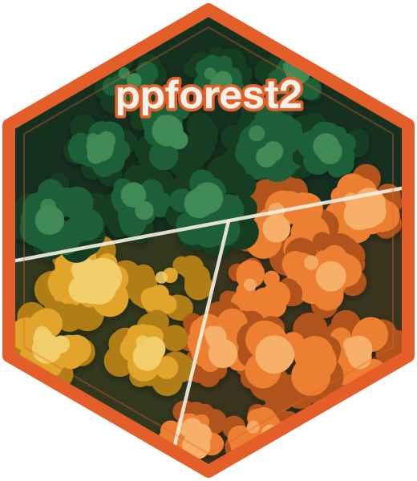

Weighted projection variable importance for a random forest.
Source:R/ppmodel.R
weighted_importance.RdWeights each tree's projection-based importance by a per-tree OOB quality score — `1 - error_rate` in `[0, 1]` for classification, and `max(0, 1 - NMSE)` in `[0, 1]` for regression — then aggregates `I_s × |a_j|` over splits. Computed lazily from the training data stored on the model; the result is cached.
Details
**Sign semantics.** Entries are non-negative by construction (weights
and per-split contributions are both non-negative). A zero entry means
"this feature never appeared in a weighted OOB-contributing split,"
not "within noise." Contrast with permuted_importance,
where negative values are meaningful. Do not re-normalize — rely on
the ranking.